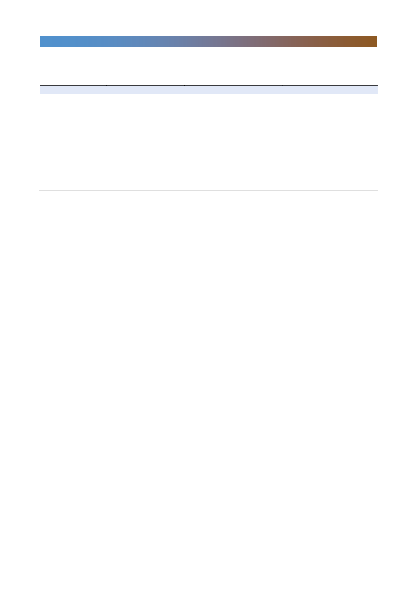

LG디스플레이(034220)
<표 1> 8G OLED 중국 광저우 투자 vs. LCD라인 전환투자 비교(60K/month 기준)
총 capex
건설투자 비중
장비투자
투자 소요 기간
LG 디스플레이 자금 부담
기회 비용
장점
자료: 한국투자증권
신규 투자
5,000
40%
3,000
1.5 년
3,500
JV 파트너와의 성장 기회 공유
OLED 기술 유출 위험
인허가 과정의 시간 소요
JV 파트너와의 투자부담 분산
전환투자
2,500
0%
2,500
1년
2,500
LCD 라인 전환 기간 동안의 매출 감소
신규장비 투자로 얻을 수 있는 생산효율성
신규투자 대비 투자비 절약
성장 기회 100% 확보
낮은 OLED 기술 유출 위험
인허가 시간 소요될 위험 없음
(단위: 십억원)
비고
총투자비 50% 이상 절감 가능
장비투자 비용 차이는 크지 않음
OLED TV 시장수요에 더 빠르게 대응 가능
10.5세대 투자보다는 7세대 라인 전환이 낫다
OLED 10.5세대 투자보다는 7세대 라인 전환이 더 효과적일 수 있다. 대형 TV
수요의 증가는 현재 진행 중이다. OLED뿐만 아니라 LCD TV 시장에서도 TV
대형화가 나타나고 있다. 10.5세대 라인이 60인치대 이상 패널 양산에 더 유리하
다고 하지만 LG디스플레이가 10.5세대 라인을 가동할 수 있는 시기는 빨라야
2020년부터다. 10.5세대 30K를 확보하기 위한 투자비도 5조원이 넘는다. 8세대
MMG(Multi Model Glass)에서 60인치대를, 7세대에서 70인치대 혹은 80인치
대 패널을 생산할 수 있다면 10.5세대 라인 투자보다 적은 투자비로 더 빠르게
시장수요에 대응할 수 있다. 이미 삼성디스플레이는 7세대 라인에서 75인치
LCD TV패널 양산을 시작했다. 7세대 유리기판에서 75인치 패널 2장을 효율적
으로 생산할 수 있기 때문이다. 우리가 10.5세대 라인을 준비하는 동안 60인치대
이상 시장은 이미 LCD로 채워질 수도 있다. 10.5세대에 투자할 돈을 7세대 및 8
세대 라인 전환에 투자해야 한다.
5